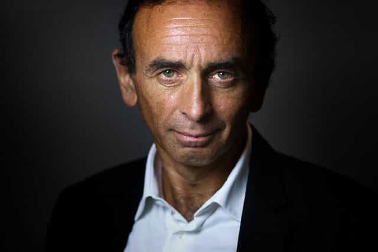
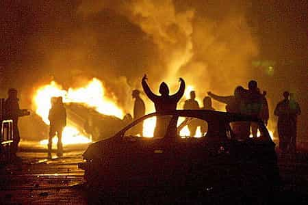

< < < Back
French Writer Reveals That Army Is Planning To Recapture Muslim No-Go Zones – Return Of Kings
Earlier this month, French writer Eric Zemmour released his new book titled “A Useless Five Year Term” dedicated to the failures of the Hollande administration.
During an interview on the French radio station RTL, host Yves Calvi and Eric Zemmour focus on this particular quote from the book (skip the video to 6:34):
But the high command of the French army knows that one day will come when it will have to recapture those areas that have become foreign on our own soil. The plan is already laid out. It is called “Operation Bramble”. It was developed in partnership with experts of the Israeli army.
He refers to the methods that the Israeli army used to recapture the zones of the Gaza strip that escaped to the control of the Hebrew state. The French army is supposedly plotting the retaking by force of Muslim “No Go Zones” that are scattered all around our large cities.
He declares that he obtained this tip from a high-ranking source in the French military staff.
Who is Eric Zemmour?

A conservative writer, historian and essayist, Eric was born to moderate Jewish parents, evacuated back to France during the Algerian War. He considers himself a perfect example of the French model of integration, despite being a Jew born in Algeria,
The most interesting part of Zemmour’s analysis is that he knows well those zones as he grew up in one of them before they became Muslim ghettos.
He made a name for himself for the swings he took at the multiculturalist agenda and the incompatibility of the Muslim culture with the values of the French Republic. It is not the first time that Zemmour finds himself under the spotlights.
He is seen in France as a “political enemy #1” as he is a scholar, a patriot and a nationalist that is not afraid to expose the love of the French elites for multiculturalism. He is often attacked verbally and physically by the leftist hordes and Good Think “celebrities” that pollute the majority of French TV studios and radio stations.

Zemmour pissing off Communist and Open Borders enthusiast Jean-Luc Mélenchon
He is also a fervent adversary of the modern feminist narrative, criticised the feminisation of our society but also the elite’s efforts to change our language to fit the principles of political correctness.
A public Trump supporter, Zemmour was one of the only journalists that publicly exposed Soros’ world influence on French television, while the national media voluntarily ignored it.
Proof that he hits where it hurts, the large record of fines and penalties imposed to him by French courts for stating what he thinks. The CRAN (Representative Council of Black Communities) or the CCIF (Committee Against Islamophobia in France), both heavily financed by George Soros, were usually the ones filing the lawsuits.
One of the only aspects that saved Zemmour from total destruction by the state law and media is the fact that he is a Jew and is then situated quite high on the scale of people protected by political correctness.
Operation Bramble, a new Battle of Algiers?

Suspect being interrogated by French parachutists during the Battle of Algiers
Zemmour compares Operation Bramble to the “Battle of Algiers,” an episode of the Algerian War of Independence (1954-1962), where elite regiments of the French army were hunting down the rebel leaders responsible for terrorists attacks aimed at French administrative buildings and places frequented by French civilians.
This whole operation was a turning point of the war, with the French army struggling to drive their invisible enemy out of the countless tortuous streets and busy urban environment of Algiers’ hills.
I strongly advise you to read Quintus’ excellent article about the Algerian conflict or watch the eponymous film, a true masterpiece, to understand more about the context of this troubled period.
The concept of Operation Bramble
Different memos were released by the government and the army headquarters after the Muslim terrorist attack in Nice, aiming at creating a greater number of reservists soldiers (an additional 15,000 to the already existing ones), composed by volunteers who would be member of a new “National Guard.”
This contingent would join forces with regular soldiers and the Gendarmerie, participate in new military maneuvers such as counter-attacks in urban environment in case of “tension or civil unrest,” or directly intervene while being “backed by air support.” Even more interesting, those memos specify that these operations could take place on the “national territory.”
It seems that this operation has already been in the books for quite a while. In the town of Roubaix in 1992, the 8th Infantry Regiment lead a full scale military simulation entitled “Recapture of Roubaix if taken hostage by Islamic militias.”
Let’s remind that Roubaix is one of these French areas that are now almost entirely populated by Muslims and is one of the most prolific djihadi hotbeds of the nation. You can read more here about the “Gang de Roubaix,” this group of “Islamo-bank robbers,” who learnt the trade while fighting in Bosnia.

The fictional town of Jéoffrécourt, one of the areas of the CENZUB, used by the military to train in urban warfare
Another element should be added in this theory. In 2006, the CENZUB (Training Centre For Urban Operations) was created for 400 million Euros, and specifically prepares soldiers to neutralise “insurgents” in an urban environment, modeled on an actual French town, with its cafés, warehouses, housing estates and residential buildings.
Is this operation realistic?

It seems highly unlikely. They could only intervene in case of massive scale civil unrest, similar to the one of 2005, that paralyzed the state for many days. The institutions also remained motionless after all the terrorist attacks that occurred on French soil those last few years.
There would be many civilian casualties as the terrorists or targets would hide among the population, in the housing estates that they know like the back of their hand.
The cost of this type of operation would be astronomical. For the total number of Muslim “No Go Zones,” multiplied by the number of regular and reserve soldiers needed, billions would need to be unlocked.
The French army is also known for its timeworn equipment. Having personally used it, some of our tools and weapons were relics from the 1960s. Operation Bramble would have to wait a complete refurbishment of our operational resources before being even remotely possible.
Is this plan another Trojan Horse?

Immediately after Zemmour’s book was released, leftist Huffington Post lead the charge by calling Zemmour a conspiracy theorist and backing their argument by asserting that they also called a high-ranking official that denied the existence of Operation Bramble.
“Hi, this is the Huff Post. Any public declarations on your secret military plan? What? It does not exist? So we thought, thanks! Case closed, take that, Zemmour!
But in all seriousness, why would the French state intervene now, after so many years of deliberate inaction? Why would they get rid of their useful idiots, that keep the citizens divided and suspicious of one another?
The creation of those new positions in the French reserve army seems to be taken too little and too late. Many, like Roosh and I, suspect it to be a bait to attract patriots and establish a database of all of them for future prosecution.
The creation of this force could be used against the nationalist forces that might threaten the hegemony of the French leftist government in the case of an uprising after yet another large scale Muslim attack.
Read More: 3 Stories The French Media Concealed While They Invented Fictions About ROK